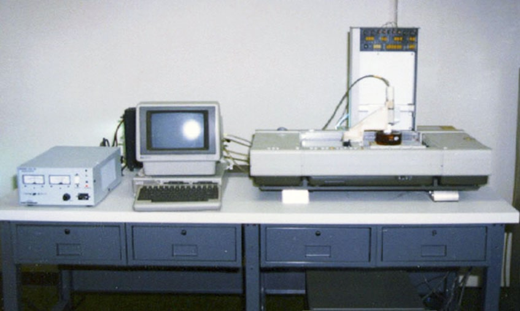
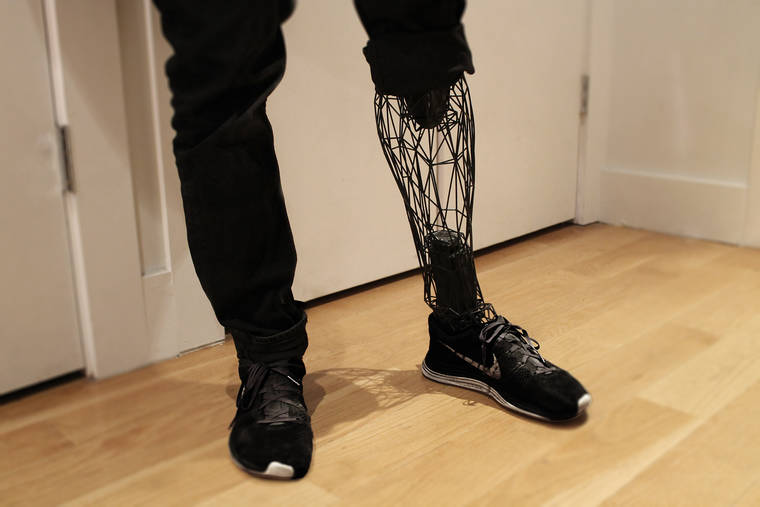
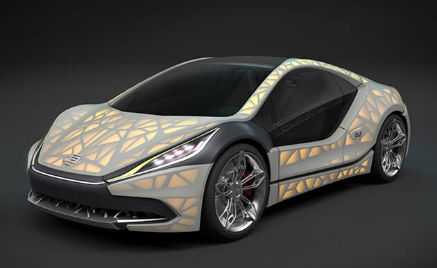

Hideo Kodama of the Nagoya Municipal Industrial Research Institute develops a rapid-prototyping system that uses photopolymers and a layer-by-layer approach to build a physical model.
Charles (Chuck) Hall invents and patents stereolithography, also known as SLA. Stereolithography “is a resin 3D printing or additive manufacturing process that uses a vat of photopolymer resin that can be cured.” He co-founds the 3D printing company 3D Systems the same year.
3D Systems commercializes the first 3D printer, the SLA-1.
Carl Deckard of the University of Texas patents selective laser sintering (SLS). Selective laser sintering is an additive manufacturing process that uses a laser to fuse and build powders into a 3D model.
S. Scott Crump and Lisa Crump invent and patent Fused Deposition Modeling (FDM). They also founded the 3D printing company Stratasys the same year.
DTM creates the first selective laser sintering (SLS) machine.
Scientists at the Wake Forest Institute for Regenerative Medicine 3D print the structure of a human bladder.
The RepRap Project launches. The RepRap Project is an open-source 3D printing project, while the RepRap is a free desktop 3D printer that can self-replicate by printing its own parts. Both initiatives made 3D printing more readily available.
FDM patents expire and entered the public domain, driving the cost of FDM printers down.
Bioprinting company Organovo creates the first 3D printed blood vessel.
The first 3D printed car, the Strati, is created.
The Chinese National High Tech Research and Development Program creates 3D printed vein-tissue.
MIT discovers a way to 3D print glass.